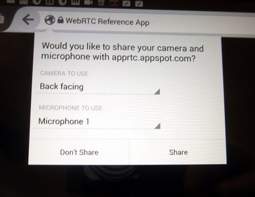
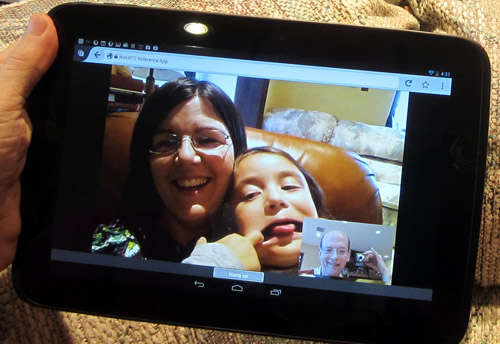

WebRTC 現跨足於 Firefox for Android (行動版) 與 Firefox 桌面版！Firefox 24 已預設支援mozGetUserMedia、mozRTCPeerConnection、DataChannels。桌面版 Firefox 20 即具備 mozGetUserMedia；桌面版 Firefox 22 接著納入mozPeerConnection 與 DataChannels。現在我們很興奮的宣佈 Firefox 行動版正式加入桌面版的行列，同樣支援這些酷炫的新功能！
可用功能
啟動 WebRTC 之後，開發者即可：
- 只需透過 JavaScript，就能直接從 Firefox for Android 擷取相機或麥克風串流 (我們知道開發者期待此功能已久！)
- 直接在瀏覽器之間進行通訊 (音訊或視訊電話均可)；請到 appspot.apprtc.com 網站進行測試
- 不需經過伺服器即可分享資料，進而啟動點對點 (Peer-to-peer) Apps；像是在通訊期間照樣玩遊戲、打字聊天、分享圖片

我們期待開發者提出更多創新概念！
初期使用者與相關回饋意見
Mozilla 目前主要支援開發者與早期使用者，以期能獲得重要的回饋意見。工作團隊尚未完備規格，且仍待我們建構更多功能並提升品質。Mozilla 將先讓一對一的單方通話更臻完善，接著再專注提升多方通話作業。我們也歡迎你加入測試與實驗的行列。針對這些功能，請隨時回饋意見、回報錯誤，甚至動手建構新的 Apps。
如果你還不知道從何下手，可參閱已發佈的 WebRTC 相關文章。特別一提，你可先從《WebRTC and the Early API》、《The Making of Face to GIF》、《PeerSquared》、《An AR Game》(此遊戲贏得我們的 getUserMedia Dev Derby 開發競賽)、《WebRTC Experiments & Demos》等文開始。

以下為簡單的視訊幀像擷取範例 (將擷取約 15fps 的圖像)：
navigator.getUserMedia({video: true, audio: false}, yes, no);
video.src = URL.createObjectURL(stream);
setInterval(function () {
context.drawImage(video, 0,0, width,height);
frames.push(context.getImageData(0,0, width,height));
}, 67);
1234567
navigator.getUserMedia({video: true, audio: false}, yes, no);video.src = URL.createObjectURL(stream); setInterval(function () { context.drawImage(video, 0,0, width,height); frames.push(context.getImageData(0,0, width,height));}, 67);
此程式碼片段取自於 nightly-gupshup 中的「Multi-person video chat」。你也可至 WebRTC 測試首頁體驗；另可至 GitHub 取得完整程式碼。
function acceptCall(offer) {
log("Incoming call with offer " + offer);
navigator.mozGetUserMedia({video:true, audio:true}, function(stream) {
document.getElementById("localvideo").mozSrcObject = stream;
document.getElementById("localvideo").play();
document.getElementById("localvideo").muted = true;
var pc = new mozRTCPeerConnection();
pc.addStream(stream);
pc.onaddstream = function(obj) {
document.getElementById("remotevideo").mozSrcObject = obj.stream;
document.getElementById("remotevideo").play();
};
pc.setRemoteDescription(new mozRTCSessionDescription(JSON.parse(offer.offer)), function() {
log("setRemoteDescription, creating answer");
pc.createAnswer(function(answer) {
pc.setLocalDescription(answer, function() {
// Send answer to remote end.
log("created Answer and setLocalDescription " + JSON.stringify(answer));
peerc = pc;
jQuery.post(
"answer", {
to: offer.from,
from: offer.to,
answer: JSON.stringify(answer)
},
function() { console.log("Answer sent!"); }
).error(error);
}, error);
}, error);
}, error);
}, error);
}
function initiateCall(user) {
navigator.mozGetUserMedia({video:true, audio:true}, function(stream) {
document.getElementById("localvideo").mozSrcObject = stream;
document.getElementById("localvideo").play();
document.getElementById("localvideo").muted = true;
var pc = new mozRTCPeerConnection();
pc.addStream(stream);
pc.onaddstream = function(obj) {
log("Got onaddstream of type " + obj.type);
document.getElementById("remotevideo").mozSrcObject = obj.stream;
document.getElementById("remotevideo").play();
};
pc.createOffer(function(offer) {
log("Created offer" + JSON.stringify(offer));
pc.setLocalDescription(offer, function() {
// Send offer to remote end.
log("setLocalDescription, sending to remote");
peerc = pc;
jQuery.post(
"offer", {
to: user,
from: document.getElementById("user").innerHTML,
offer: JSON.stringify(offer)
},
function() { console.log("Offer sent!"); }
).error(error);
}, error);
}, error);
}, error);
}
12345678910111213141516171819202122232425262728293031323334353637383940414243444546474849505152535455565758596061626364656667686970
function acceptCall(offer) { log("Incoming call with offer " + offer); navigator.mozGetUserMedia({video:true, audio:true}, function(stream) { document.getElementById("localvideo").mozSrcObject = stream; document.getElementById("localvideo").play(); document.getElementById("localvideo").muted = true; var pc = new mozRTCPeerConnection(); pc.addStream(stream); pc.onaddstream = function(obj) { document.getElementById("remotevideo").mozSrcObject = obj.stream; document.getElementById("remotevideo").play(); }; pc.setRemoteDescription(new mozRTCSessionDescription(JSON.parse(offer.offer)), function() { log("setRemoteDescription, creating answer"); pc.createAnswer(function(answer) { pc.setLocalDescription(answer, function() { // Send answer to remote end. log("created Answer and setLocalDescription " + JSON.stringify(answer)); peerc = pc; jQuery.post( "answer", { to: offer.from, from: offer.to, answer: JSON.stringify(answer) }, function() { console.log("Answer sent!"); } ).error(error); }, error); }, error); }, error); }, error);} function initiateCall(user) { navigator.mozGetUserMedia({video:true, audio:true}, function(stream) { document.getElementById("localvideo").mozSrcObject = stream; document.getElementById("localvideo").play(); document.getElementById("localvideo").muted = true; var pc = new mozRTCPeerConnection(); pc.addStream(stream); pc.onaddstream = function(obj) { log("Got onaddstream of type " + obj.type); document.getElementById("remotevideo").mozSrcObject = obj.stream; document.getElementById("remotevideo").play(); }; pc.createOffer(function(offer) { log("Created offer" + JSON.stringify(offer)); pc.setLocalDescription(offer, function() { // Send offer to remote end. log("setLocalDescription, sending to remote"); peerc = pc; jQuery.post( "offer", { to: user, from: document.getElementById("user").innerHTML, offer: JSON.stringify(offer) }, function() { console.log("Offer sent!"); } ).error(error); }, error); }, error); }, error);}
程式碼只要能在 Firefox 桌面版執行，也就同樣能在 Firefox for Android 執行，這也就是 HTML5 美妙之處！但在讓 Firefox for Android 運作更完善的同時，你必須額外考量到裝置的螢幕尺寸與旋轉方向等問題。
目前仍有許多問題尚待克服，對行動裝置尤為如此。我們已經透過多個主要的 WebRTC 網站 (包含talky.io、apprtc.appspot.com、codeshare.io)，來測試 Firefox for Android 對單方通話的支援程度。
目前已知問題
- 需強化回音消除的功能。目前建議使用耳麥通話 (Bug 916331)
- 偶爾會出現音訊/視訊無法同步，或是音訊發生嚴重延遲的問題。我們將於 Firefox 25 中修復問題並改善延遲 (Bug 884365)
- 某些裝置在擷取視訊時，可能產生偶發性的當機情形。我們正積極找出問題所在 (Bug 902431)
- 若使用較低階或連線品質較差的裝置，則在較高解析度視訊在達到高幀率時，可能產生解碼或傳送的問題

將即時通訊功能帶入 Web 吧！你可建構自己的 Apps、提供你的意見、回報相關錯誤，甚至一同加入測試與開發。只要你能提供任何協助、想法、熱忱，都有助於讓 Web 更上層樓。
原文鏈結：https://hacks.mozilla.org/2013/09/firefox-24-for-android-gets-webrtc-support-by-default/